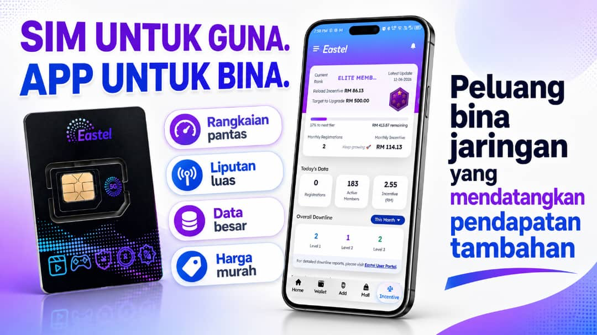

1 Sim. 1 Permulaan.
Bukan Sekadar Tukar Line.
Bukan Sekadar Tukar Line.
Guna Prepaid. Bina Jaringan Pengguna.
Eastel ialah produk telco harian yang mudah difahami: SIM, data, reload dan app. Tok ABAK bantu korang mula dengan cara yang lebih tersusun — guna dulu, faham produk, kemudian bina jaringan pengguna.
Simulasi dan penerangan ini bukan janji hasil.

Elite Member
Mula guna & bina asas jaringan
Ambassador
Unlock bila komisen reload capai RM500
Senior Ambassador
Unlock bila komisen reload capai RM3,500
Fakta Semua Orang TahuApa Yang Buat
Apa Yang Buat
Eastel Mudah Diterima?
Sebab Eastel bermula daripada benda yang orang memang guna setiap bulan — line, data, reload dan app.
Produk Harian
Line, data dan reload memang digunakan setiap bulan.
Mula Rendah
Boleh mula dengan kos serendah RM10 untuk cuba sendiri.
Nilai Senang Nampak
Data besar, rangkaian pantas, liputan luas dan harga jimat.
Ada App
Reload, pakej, pengguna dan perkembangan jaringan lebih tersusun.
Bimbingan Tok ABAK
Produk Dah Mudah Faham. Gerak Kena Tersusun.
Bila produk mudah diterima, langkah seterusnya ialah faham produk, guna sendiri dahulu, susun follow-up dan aktifkan jaringan.
Tok ABAK
EastelPreneur • E-0003466
Faham Produk
Faham apa yang dibawa: prepaid, data, reload, app dan penggunaan harian.
Guna Sendiri Dahulu
Pengalaman sendiri menjadikan penerangan lebih yakin dan lebih mudah diterima.
Susun Follow-up
Follow-up yang kemas, beradab dan konsisten membantu prospek bergerak ke keputusan.
Aktifkan Jaringan
Reload dijaga, pengguna diaktifkan dan momentum jaringan terus bergerak.

ESK sebagai launch kit — stok, bahan promosi dan identiti lapangan dalam satu set.
ESK BoosterDah Nampak Struktur?
Semak Potensi ESK ›
Dah Nampak Struktur?
Mula Bergerak Dengan
Kit Yang Lengkap.
ESK membantu builder yang mahu bergerak lebih serius — ada stok SIM, bahan promosi dan identiti lapangan untuk mula approach dengan lebih yakin.
RM299 Promo 30 SIM 30 Flyers Polo Shirt Cap
Semak Potensi ESK ›